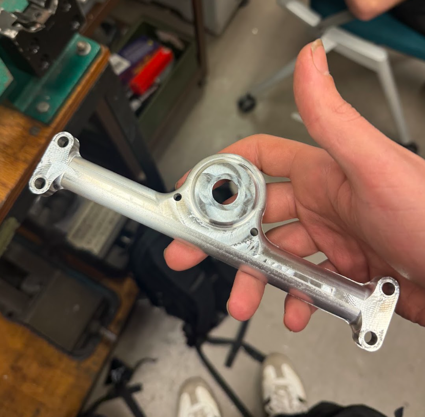
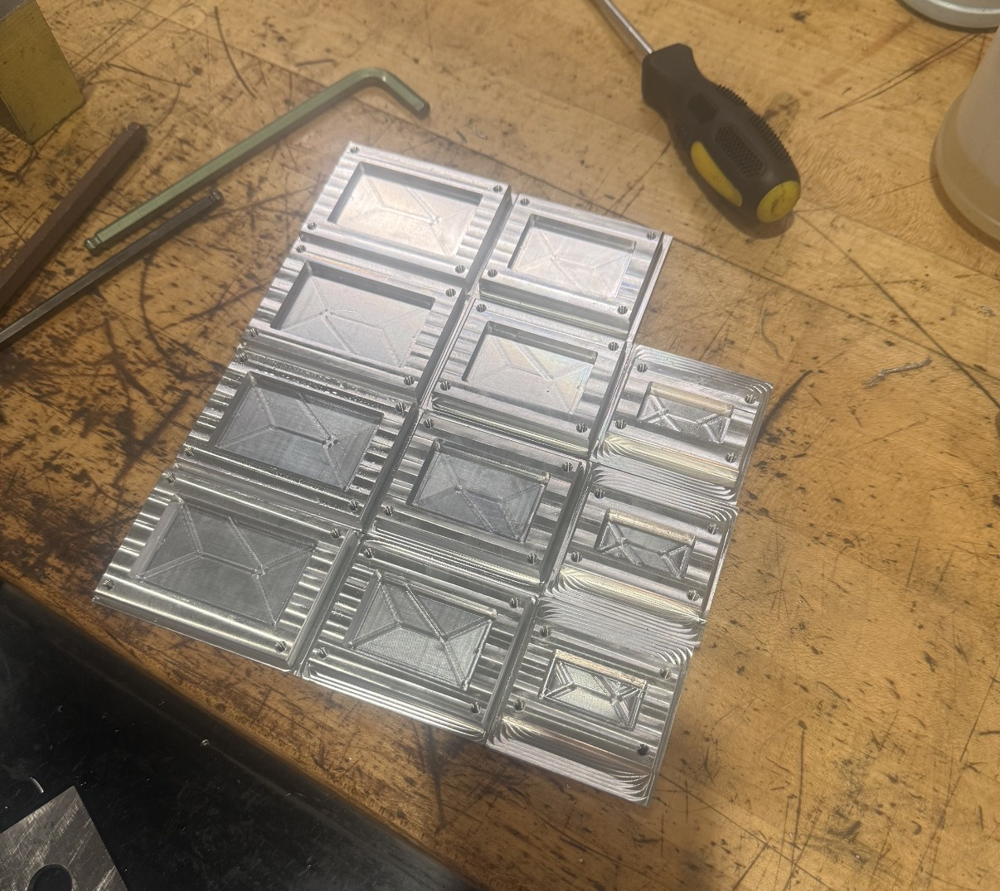
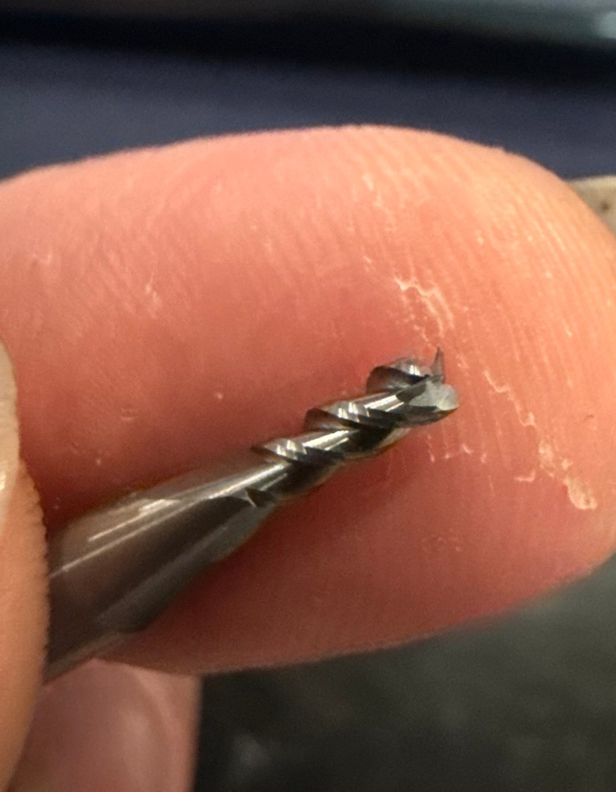
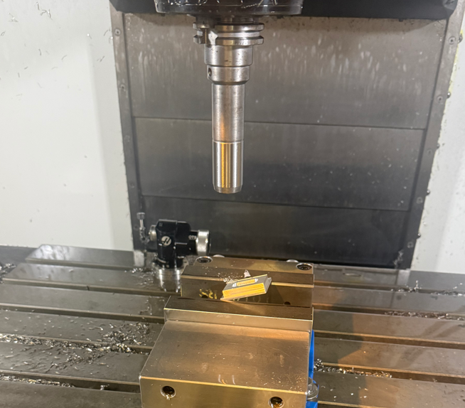
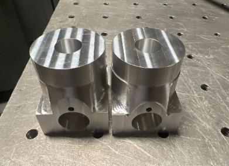

This page serves as a place for smaller general CNC projects that I still wish to showcase. With my roles as the lead Baja manufacturer and researcher in CAMAL, I have machined various parts, and I look forward to continually updating this page.



I machined the 2026 steering housing and steering pinion utilizing a custom fixture.



Three sets of four different sized concrete molds for the NCSU Civil engineering department. The part featured a 1mm internal radius, making for some small tooling and difficult CAM.


These two plates were for a graduate project where they were mounted to a fixture that was used for remotely controlling the pedals of a car.
This section is the graveyard of scrapped parts or machine crashes. If you haven’t messed up a part, you haven’t been machining long enough, and I like to remind myself of my scrapped parts to make sure I always work carefully.




More parts to come!